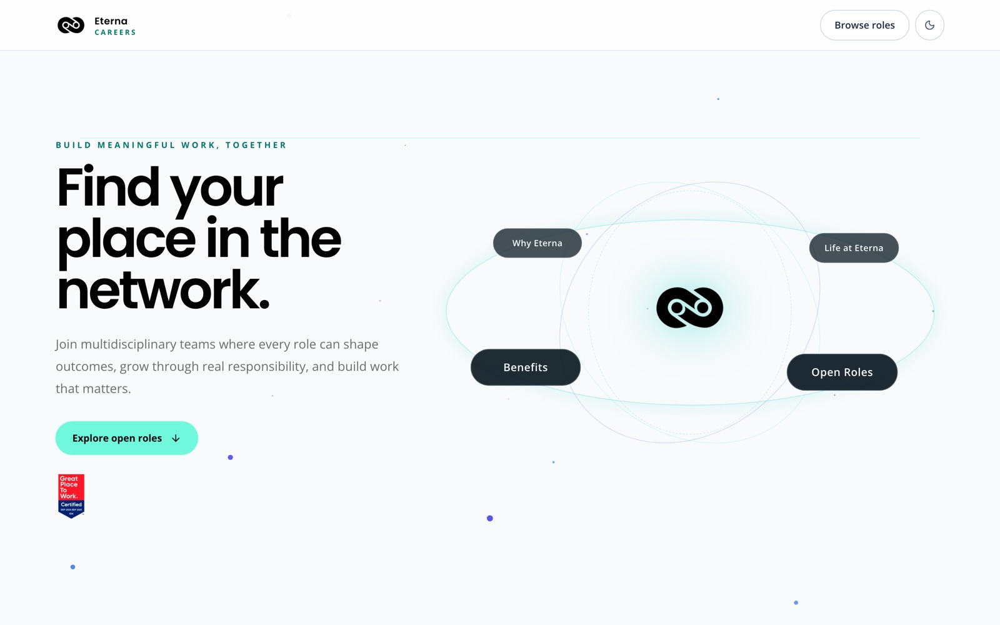

Every row was still there
How a renamed form column wiped 12,247 CV links from a live recruitment pipeline while every check passed, and how I made that kind of failure loud.
01The system
Eterna Indonesia is an outsourcing company that recruits at volume. Applicants come in through three recruitment funnels built on Google Forms. Every six hours, a scheduled batch job rebuilds the candidate dataset from scratch and publishes it to two places: a CV search app for recruiters, and the company’s HR portal.

02The symptom
Recruiters suddenly saw no CV for most candidates in the portal. Nothing had crashed, and the existing checks were passing.
03The cause
The intake forms had been edited, and the column holding the CV upload now had a different header. The mapper matched headers exactly, so it no longer found the CV column. It did not fail; it simply produced an empty CV field for every affected row. Because the job rebuilds everything every six hours, the next run overwrote the good links in production with blanks.
# before: one exact header, silently missing after the form edit cv_file_id = row.get(OLD_CV_HEADER) # -> None for most rows # after: every real header spelling, found by checking the actual sheets CV_HEADERS = [...] # all 4 variants in use cv_file_id = first_present(row, CV_HEADERS)
Simplified for illustration; real header names omitted.
04Try it
Run the pipeline under three conditions and watch what reaches production.
Checks this run
Production after this run
05The fix
- Recover the data. The raw form responses still held every upload, so all 12,247 links could be rebuilt from source rather than patched by hand.
- Fix the mapper. I listed the header spellings actually present across the three funnels (four variants) and matched all of them, instead of assuming one.
- Guard on content, not just shape. I added a per-funnel check on CV coverage: if the share of candidates with a CV link drops by more than 10%, the run fails and production keeps the last good data. The pull request showed before-and-after coverage for every funnel; one funnel had gone from 100% to 0%.
- Never overwrite good with empty. Together with a portal-side change, the ingest no longer replaces a stored CV link with a blank value.
06A side finding
While checking the pipeline’s freshness gate, I looked at the hour-of-day distribution of 14,249 application timestamps. The distribution showed the timestamps were stored as Jakarta wall-clock time, not UTC as the gate assumed. I documented it and proposed a corrected staleness check; that change was not merged.
07What I took from it
- Silence is a failure mode. The most expensive bugs here raised no error. A pipeline should fail loudly when the data stops looking like itself, not only when code throws.
- Check what the data means, not just its shape. Row counts and schemas pass when a column quietly empties. A coverage check on columns that matter costs a few lines and catches a whole class of failures.
- Rebuild-from-scratch pipelines need a brake. Regenerating everything every run is simple and robust, until a bad run overwrites good data. Failing the run before publishing keeps the last good version live.